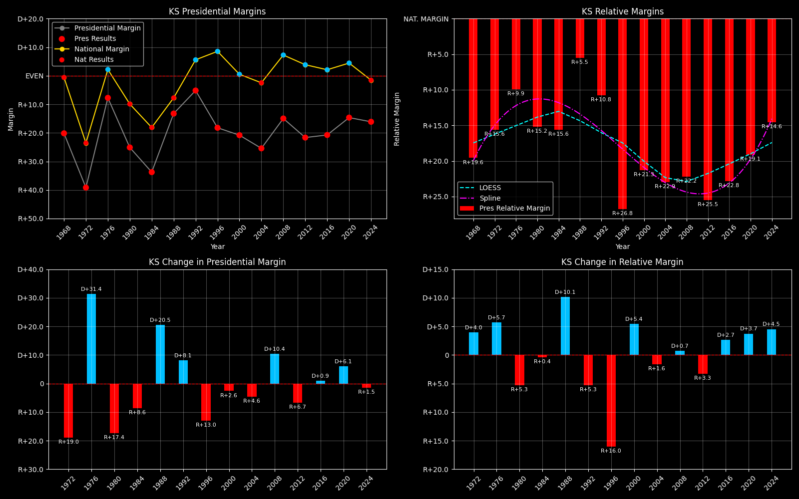

← Back to Map

Kansas (KS) statewide
Kansas (KS) — Data
| Year | EVs | D | R | Margin | Rel. Margin | Nat. Margin | Margin Δ | Rel. Margin Δ | Nat. Margin Δ | Other votes | Total votes |
|---|
| 1968 | 7 | 300,893(34.8%) | 475,068(55.0%) | R+20.2 | R+19.6 | R+0.6 | | | | 88,121(10.2%) | 864,082 |
| 1972 | 7 | 268,021(30.4%) | 612,953(69.6%) | R+39.2 | R+15.6 | R+23.5 | R+19.0 | D+4.0 | R+23.0 | 0(0.0%) | 880,974 |
| 1976 | 7 | 427,755(46.1%) | 499,482(53.9%) | R+7.7 | R+9.9 | D+2.2 | D+31.4 | D+5.7 | D+25.7 | 0(0.0%) | 927,237 |
| 1980 | 7 | 330,130(33.9%) | 574,567(59.0%) | R+25.1 | R+15.2 | R+9.9 | R+17.4 | R+5.3 | R+12.1 | 69,000(7.1%) | 973,697 |
| 1984 | 7 | 333,149(32.7%) | 677,296(66.4%) | R+33.7 | R+15.6 | R+18.1 | R+8.6 | R+0.4 | R+8.2 | 9,437(0.9%) | 1,019,882 |
| 1988 | 7 | 422,636(42.6%) | 554,049(55.8%) | R+13.2 | R+5.5 | R+7.7 | D+20.5 | D+10.1 | D+10.4 | 16,359(1.6%) | 993,044 |
| 1992 | 6 | 389,388(33.7%) | 449,096(38.9%) | R+5.2 | R+10.8 | D+5.6 | D+8.1 | R+5.3 | D+13.3 | 316,363(27.4%) | 1,154,847 |
| 1996 | 6 | 387,659(36.1%) | 583,245(54.3%) | R+18.2 | R+26.8 | D+8.6 | R+13.0 | R+16.0 | D+3.0 | 103,202(9.6%) | 1,074,106 |
| 2000 | 6 | 399,276(37.2%) | 622,332(58.0%) | R+20.8 | R+21.3 | D+0.5 | R+2.6 | D+5.4 | R+8.0 | 50,608(4.7%) | 1,072,216 |
| 2004 | 6 | 434,960(36.7%) | 736,437(62.1%) | R+25.4 | R+22.9 | R+2.5 | R+4.6 | R+1.6 | R+3.0 | 15,110(1.3%) | 1,186,507 |
| 2008 | 6 | 514,765(41.7%) | 699,655(56.6%) | R+15.0 | R+22.2 | D+7.3 | D+10.4 | D+0.7 | D+9.7 | 21,452(1.7%) | 1,235,872 |
| 2012 | 6 | 439,908(38.1%) | 689,808(59.7%) | R+21.6 | R+25.5 | D+3.9 | R+6.7 | R+3.3 | R+3.4 | 25,399(2.2%) | 1,155,115 |
| 2016 | 6 | 427,005(36.3%) | 671,018(57.0%) | R+20.7 | R+22.8 | D+2.1 | D+0.9 | D+2.7 | R+1.8 | 78,912(6.7%) | 1,176,935 |
| 2020 | 6 | 570,323(41.6%) | 771,406(56.2%) | R+14.7 | R+19.1 | D+4.4 | D+6.1 | D+3.7 | D+2.3 | 30,574(2.2%) | 1,372,303 |
| 2024 | 6 | 544,853(41.0%) | 758,802(57.2%) | R+16.1 | R+14.6 | R+1.5 | R+1.5 | D+4.5 | R+6.0 | 23,936(1.8%) | 1,327,591 |
Column explanations
- Year
- Election year.
- EVs
- Number of electoral votes allocated to this state or unit.
- D
- Number of votes for the Democratic candidate (raw count).
- R
- Number of votes for the Republican candidate (raw count).
- Margin
- Margin between the two major-party candidates ((D - R)/(D + R)).
- Rel. Margin
- The presidential margin relative to the national presidential margin (Margin - Nat. Margin).
- Nat. Margin
- The national presidential margin for that year ((D_total - R_total)/(D_total + R_total)).
- Δ
- Change (delta) in the value from the previous election year. Blank if no data for previous year.
- Other votes
- Number of votes for third-party (other) candidates (raw count).
- Total votes
- Total voter turnout or ballots cast (when provided).